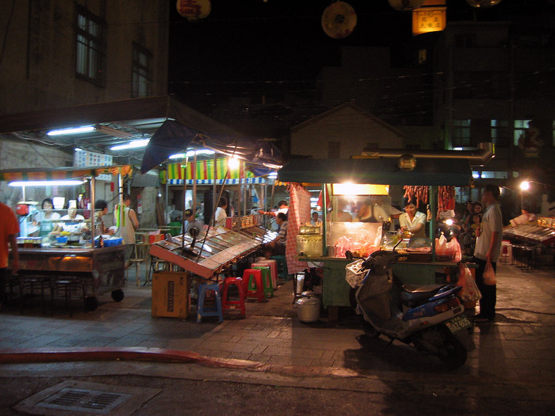
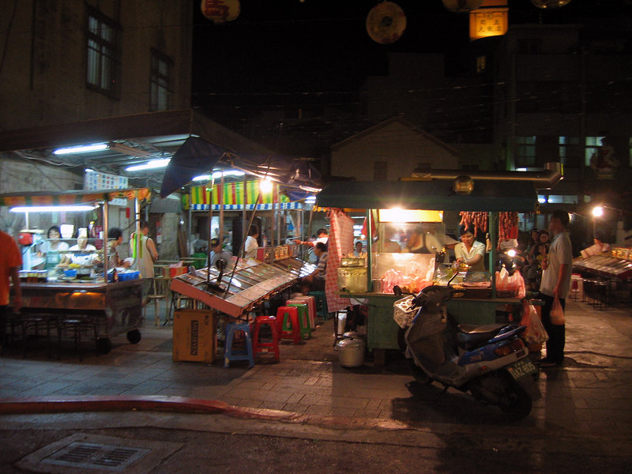

北甲宮小夜市擺攤的幾間美食攤販都有著幾十年的歷史，口味與品質歷久不衰。 每日下午約四點開始營業，店家營業到午夜十二點左右休息，廣場上的美食包括嘉嘉碳烤、馬路益燒肉飯、 彈珠台，夏天會另外有賣剉冰的攤販營業。雖然小夜市的規模真的十分迷你，店家數目屈指可數， 然而這些店家都是歷經幾十年的歷練，仍能贏得當地人的口碑與喜愛，想見食物水準有一定的保證。
北甲宮外棚子內也停著一艘王船，多年未見送王，現任王爺駐守北甲宮保境安民也有段時間， 目前七、八十歲的馬公市區高齡居民卻還記得的一句俗話：「東甲好筆尾，南甲好櫓尾， 北甲好龜粿」。「北甲」居民清朝時期多是做糕的師傅（龜粿是閩南話，解讀成國語便是做餅糕的好手）。 北甲宮旁巷子內正有著名的春仁黑糖糕。